Supplied unofficial study solution, not an official GTU answer key. Answers and teaching diagrams have not been independently verified. Use Enlarge image for small details.આ આપેલો બિનસત્તાવાર અભ્યાસ ઉકેલ છે, સત્તાવાર GTU જવાબવહી નથી. જવાબો અને આકૃતિઓની સ્વતંત્ર ચકાસણી થઈ નથી. વાંચવા માટે ચિત્ર મોટું કરો.
Substation Engineering
Q1 · Substation basics and bus
Q.1 (a) List basic functions of an electrical substation. (3 marks)Q.1 (a) List basic functions of an electrical substation. (3 marks)3 marks૦૩ ગુણ
- Voltage change: Step up at generation for transmission, step down for distribution to users.
- Switching: Connect or disconnect lines and feeders via breaker and isolator for operation and maintenance.
- Protection: Detect fault via CT VT and relay then trip breaker to isolate faulty part.
- Metering and monitoring: Measure V I P Q energy for billing and control.
- Reactive support: Capacitor or reactor banks for voltage control and power factor.
- Communication node: PLCC, fiber, SCADA interface for grid control.
- વોલ્ટેજ બદલવું: ઉત્પાદન પર વધારવું ટ્રાન્સમિશન માટે, વિતરણ માટે ઘટાડવું.
- જોડવું તોડવું: બ્રેકર isolator થી લાઇન ફીડર ચાલુ બંધ.
- રક્ષણ: CT VT relay થી fault પારખે પછી બ્રેકર ટ્રિપ કરી અલગ કરે.
- માપ અને દેખરેખ: V I P Q ઉર્જા મીટર બિલિંગ અને કંટ્રોલ માટે.
- રિએક્ટિવ સહાય: કેપેસિટર reactor થી વોલ્ટેજ અને power factor કંટ્રોલ.
- કોમ્યુનિકેશન નોડ: PLCC fiber SCADA ઇન્ટરફેસ ગ્રીડ કંટ્રોલ માટે.
Q.1 (b) Sate and explain the factors considered for substation site selection. (4 marks)Q.1 (b) Sate and explain the factors considered for substation site selection. (4 marks)4 marks૦૪ ગુણ
- Load centre: Near major loads to reduce distribution length and losses.
- Land: Enough level area with space for future bays, easy shape, low cost, good bearing capacity.
- Access: Road for transformer delivery, rail if possible, water for construction and fire.
- Network in and out: Feasible line corridors without excessive crossings, river or forest restrictions.
- Environment: No heavy flooding, low pollution dust salt, avoid forest and habitation resistance, earthing soil not rocky.
- Utilities and safety: Grid nearby, telecom, labour, clearance from airports schools.
Final site compares 2 to 3 options on cost, losses, reliability.
- લોડ કેન્દ્ર: મોટા લોડ નજીક જેથી વિતરણ લંબાઈ અને loss ઓછા.
- જમીન: સપાટ પૂરતી જગ્યા ભવિષ્ય બે માટે, આકાર સરળ, કિંમત ઓછી, વજન ઝીલે તેવી.
- પહોંચ: ટ્રાન્સફોર્મર લાવવા રસ્તા, શક્ય તો રેલ, પાણી બાંધકામ અને ફાયર માટે.
- નેટવર્ક: આવનારી નીકળતી લાઇન માટે corridor શક્ય, નદી જંગલ નડતર ઓછું.
- પર્યાવરણ: પૂર ન આવે, ધૂળ ખાર ઓછો, જંગલ વસાહત વિરોધ નહિ, માટી ખડકાળ નહિ જેથી અર્થિંગ થાય.
- સગવડ સલામતી: ગ્રીડ નજીક, ટેલિકોમ મજૂર, એરપોર્ટ શાળા થી clearance.
અંતે 2 થી 3 જગ્યા ના ખર્ચ loss વિશ્વસનીયતા નો તુલના કરો.
Q.1 (c) Draw a single line diagram of a 132KV substation with a single bus system and explain each component in detail. (7 marks)Q.1 (c) Draw a single line diagram of a 132KV substation with a single bus system and explain each component in detail. (7 marks)7 marks૦૭ ગુણ
Layout: Two incomers 132kV plus one transformer bay 132/33kV and two feeders all on one common bus. Each bay has bus isolator, circuit breaker, line isolator with earth switch, CT, PT, lightning arrester.
- Bus bar 132kV: Aluminium tube carries all power, rated for 2000A short time 31.5kA.
- Isolator: Visible break for maintenance only at no load, interlocked with CB.
- Circuit breaker SF6: Interrupts load and fault current, main protection.
- CT PT: Step down I V for metering and relay.
- Power transformer 132/33kV: ONAN/ONAF 50MVA with tap changer.
- Arrester, earth: Clips surge, earthing grid safety.
Adv cheap simple, disadv bus fault shuts all.
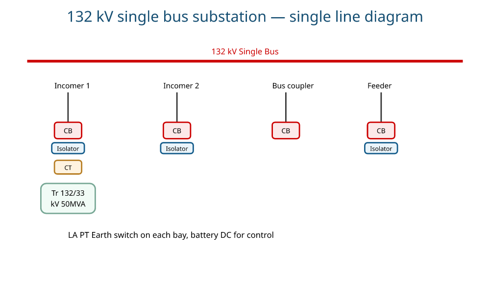
રચના: બે આવક 132kV વત્તા એક ટ્રાન્સફોર્મર 132/33kV અને બે ફીડર બધા એક બસ પર. દરેક bay માં બસ isolator, બ્રેકર, લાઇન isolator earth switch, CT PT, arrester.
- બસ 132kV: એલ્યુમિનિયમ ટ્યુબ બધો પાવર વહન કરે.
- Isolator: દેખીતો કાપ માત્ર નો લોડે જાળવણી માટે, CB સાથે interlock.
- બ્રેકર SF6: લોડ અને fault કરંટ તોડે.
- CT PT: I V નાના કરી મીટર relay ને.
- ટ્રાન્સફોર્મર 132/33kV: 50MVA tap changer સાથે.
- arrester earth: surge રોકે, અર્થિંગ સલામતી.
ફાયદો સસ્તું સરળ, ગેરલાભ બસ fault એ બધું બંધ.
Q.1 (c) OR List different bus layouts used in substations. Explain any two with neat diagrams. (7 marks)Q.1 (c) OR List different bus layouts used in substations. Explain any two with neat diagrams. (7 marks)7 marks૦૭ ગુણ
Layouts: Single bus, single bus sectionalised, double bus single breaker, double bus with bus coupler, ring mesh, one and half breaker, double breaker.
Single bus: All feeders on one bus via one CB each. Cheapest for distribution, one bus fault loses all. Operation simple.
Double bus with coupler: Two main buses A and B, each feeder can select via two isolators, coupler CB connects buses. For maintenance shift feeder to other bus without outage, flexibility high, cost more but justified for EHV. Protection needs bus selection logic.
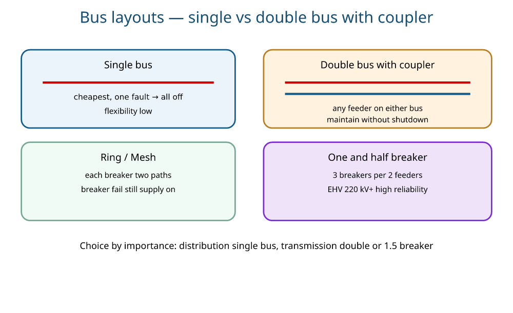
લેઆઉટ: single bus, sectionalised, double bus, ring mesh, one and half breaker, double breaker.
Single bus: બધા ફીડર એક bus પર એક CB થી. વિતરણ માટે સસ્તું, bus fault એ બધું બંધ. ચલાવવું સરળ.
Double bus coupler સાથે: બે bus A B, દરેક ફીડર બે isolator થી કોઈ પણ પર, coupler CB બંને જોડે. જાળવણી વખતે બીજા પર ફેરવો outage વગર, લવચીકતા વધુ, EHV માટે ખર્ચ વાજબી.
Q2 · Equipment and safety
Q.2 (a) State advantages of GIS substations. (3 marks)Q.2 (a) State advantages of GIS substations. (3 marks)3 marks૦૩ ગુણ
- Area about 10% of AIS — fits in city buildings or underground.
- Not affected by pollution, salt, dust — no external flashover.
- Very low maintenance sealed SF6 25 years, personnel safe all live enclosed.
- High reliability availability for EHV, low outage rate.
- Lower lifecycle cost when land costly, less site work.
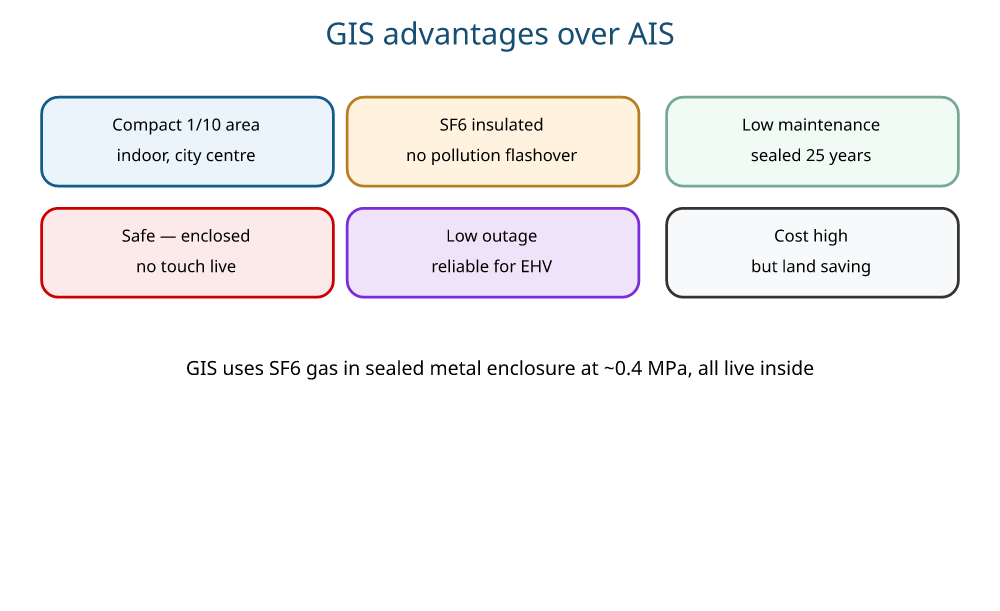
- જગ્યા AIS ના 10% — શહેર બિલ્ડિંગ કે અન્ડરગ્રાઉન્ડ માં બેસે.
- પ્રદૂષણ ખાર ધૂળ અસર નહિ — બાહ્ય flashover નહિ.
- જાળવણી ખૂબ ઓછી SF6 સીલ 25 વર્ષ, માણસ સલામત બધું ઢંકાયેલું.
- વિશ્વાસ વધુ EHV માટે outage ઓછો.
- જમીન મોંઘી ત્યાં કુલ ખર્ચ ઓછો.
Q.2 (b) Explain condition monitoring of a transformer. (4 marks)Q.2 (b) Explain condition monitoring of a transformer. (4 marks)4 marks૦૪ ગુણ
On line checks without shutdown:
- Oil: Temperature top and winding via sensor, oil level, moisture, dissolved gas analysis DGA for incipient fault — H2 C2H2 high means discharge.
- Bushing: Tan delta and capacitance, infrared thermography for hot spots.
- Load and tap: Current loading vs rating, tap changer operations count and wear.
- Acoustics vibration: Hum change indicates core looseness, partial discharge sensor UHF.
Periodic tests: insulation resistance, turns ratio, moisture in paper. Alarms to SCADA, trending predicts failure.
બંધ કર્યા વગર તપાસ:
- તેલ: તાપમાન સેન્સર, તેલ સ્તર, ભેજ, DGA — H2 C2H2 વધે તો discharge.
- Bushing: tan delta capacitance, infrared થી ગરમ જગ્યા.
- લોડ tap: કરંટ rating સામે, tap કેટલી વાર બદલાયો.
- અવાજ કંપન: ઘોંઘાટ બદલાય તો core ઢીલું, partial discharge UHF.
સમયાંતરે IR turns ratio કાગળ ભેજ તપાસ, SCADA ને alarm, trend થી ખામી આગાહી.
Q.2 (c) List out types of isolators. Explain any one in detail. (7 marks)Q.2 (c) List out types of isolators. Explain any one in detail. (7 marks)7 marks૦૭ ગુણ
Types: Vertical break, horizontal centre break, double break, pantograph, semi pantograph.
Vertical break detailed: One moving blade pivots vertically, one fixed jaw. When open blade swings up leaving visible gap. Single column per phase, three columns on one base. Operation motor plus manual handle, interlocked so CB must be open. Arcing horns optional. Needs less width than centre break, suits EHV lines where phase spacing large. With earth switch blade grounds line after opening for safety.
Rating upto 420kV, short time 40kA, all at no load only.
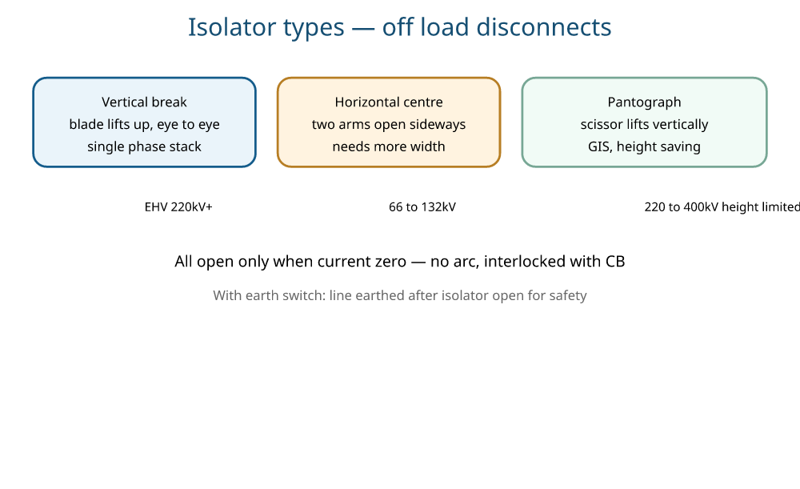
પ્રકાર: vertical break, horizontal centre break, double break, pantograph.
Vertical break વિગતે: એક ચલ blade ઊભું ફરે, સામે સ્થિર jaw. ખૂલે ત્યારે blade ઉપર જાય દેખીતો gap. એક column પ્રતિ ફેઝ ત્રણ એક બેઝ પર. મોટર વત્તા હાથો, CB ખૂલ્યું હોય ત્યારે જ ખૂલે interlock. ઓછી પહોળાઈ centre break થી, EHV માં અનુકૂળ. earth switch સાથે ખૂલ્યા પછી લાઇન earth થાય સલામતી.
420kV સુધી, માત્ર નો લોડે.
Q.2 (a) OR Explain sequence of operation of isolator, circuit breaker and earth switch while opening and closing a line. (3 marks)Q.2 (a) OR Explain sequence of operation of isolator, circuit breaker and earth switch while opening and closing a line. (3 marks)3 marks૦૩ ગુણ
Opening line: First open CB to break current, then open line isolator, then bus isolator, then close earth switch to ground line for work. CB must be open before isolator to avoid arcing under load.
Closing line: Reverse: first open earth switch, then close bus isolator, then line isolator, finally close CB to energise. Check sync check relay for voltage matching. Interlock enforces order.
લાઇન ખોલવી: પહેલા CB ખોલો કરંટ તોડવા, પછી line isolator, પછી bus isolator, પછી earth switch બંધ કરી લાઇન earth કરો કામ માટે. isolator લોડે ખોલો તો ચિંગારી થાય તેથી CB પહેલા.
લાઇન બંધ કરવી: ઊલટું: earth switch ખોલો, bus isolator બંધ, line isolator બંધ, છેલ્લે CB બંધ કરી ઊર્જા આપો. sync check થી વોલ્ટેજ મળતું તપાસો. interlock ક્રમ સાચવે.
Q.2 (b) OR Explain the importance of pad locking arrangement. (4 marks)Q.2 (b) OR Explain the importance of pad locking arrangement. (4 marks)4 marks૦૪ ગુણ
Padlock = lockout tagout personal safety. Each work crew puts own padlock on isolator handle, earth switch, CB trolley so no one can operate while men work on line. Keys held by crew, only after all remove locks can close.
Prevents accidental energising by remote SCADA or another operator. Complies with factory act. Colour codes: red danger do not operate, yellow caution. Log book records who locked.
Padlock = lockout tagout વ્યક્તિ સલામતી. દરેક ટોળી પોતાનું તાળું isolator હાથો earth switch CB trolley પર લગાવે જેથી કોઈ ચાલુ ન કરી શકે માણસ કામ કરતા હોય ત્યાં. ચાવી ટોળી પાસે, બધા તાળા કાઢે પછી જ બંધ થાય.
અચાનક SCADA કે બીજા operator થી ચાલુ થતું અટકે. factory act પાલન. રંગ લાલ જોખમ ન ચલાવો પીળો સાવધ. log book માં નોંધ.
Q.2 (c) OR Draw and explain PLCC (Power Line Carrier Communication) schematic diagram. (7 marks)Q.2 (c) OR Draw and explain PLCC (Power Line Carrier Communication) schematic diagram. (7 marks)7 marks૦૭ ગુણ
PLCC sends high frequency 40 to 500kHz speech and teleprotection over power line itself. Blocks: control room voice to carrier set modulator, coupling capacitor connects HF to line while blocking power frequency, line trap inductor blocks HF entering substation bus to keep it on line, at far end reverse.
Uses: speech between stations, relay carrier blocking or permissive trip signals, SCADA RTU data, no need for separate phone line even 200km. Limitation noise and attenuation, now partly replaced by fiber OPGW but still backup.
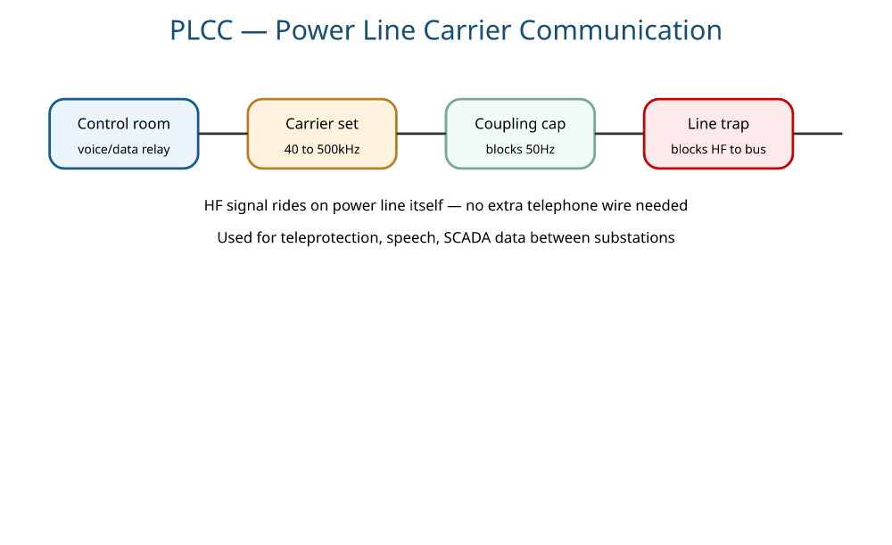
PLCC ઉચ્ચ frequency 40 થી 500kHz વાત અને relay સિગ્નલ પાવર લાઇન પર જ મોકલે. ભાગ: કંટ્રોલ રૂમ વાત → carrier set modulator, coupling capacitor HF ને લાઇન પર જોડે પણ 50Hz રોકે, line trap inductor HF ને bus માં જતો રોકી લાઇન પર રાખે, સામે ઊલટું.
ઉપયોગ: સ્ટેશન વચ્ચે વાત, relay carrier સિગ્નલ, SCADA ડેટા, 200km સુધી અલગ ફોન લાઇન ન જોઈએ. ખામી ઘોંઘાટ attenuation, હવે fiber OPGW આવ્યું પણ backup તરીકે ચાલુ.
Q3 · Batteries, reclosers and monitoring
Q.3 (a) Compare lead acid battery and Nickel cadmium battery. (3 marks)Q.3 (a) Compare lead acid battery and Nickel cadmium battery. (3 marks)3 marks૦૩ ગુણ
| Point | Lead acid | Nickel Cadmium NiCd |
|---|---|---|
| Voltage per cell | 2.0V nominal | 1.2V nominal |
| Cost | Cheaper upfront | 2 to 3 times costlier but long life 15 to 20 years |
| Maintenance | Vented needs water topping, hydrogen vent | Sealed low maintenance |
| Temperature | -10 to 40°C | -20 to 50°C wide, rugged |
| Self discharge | Higher | Lower |
Substation uses 110V DC: lead acid where staff present, NiCd where unmanned remote for reliability.
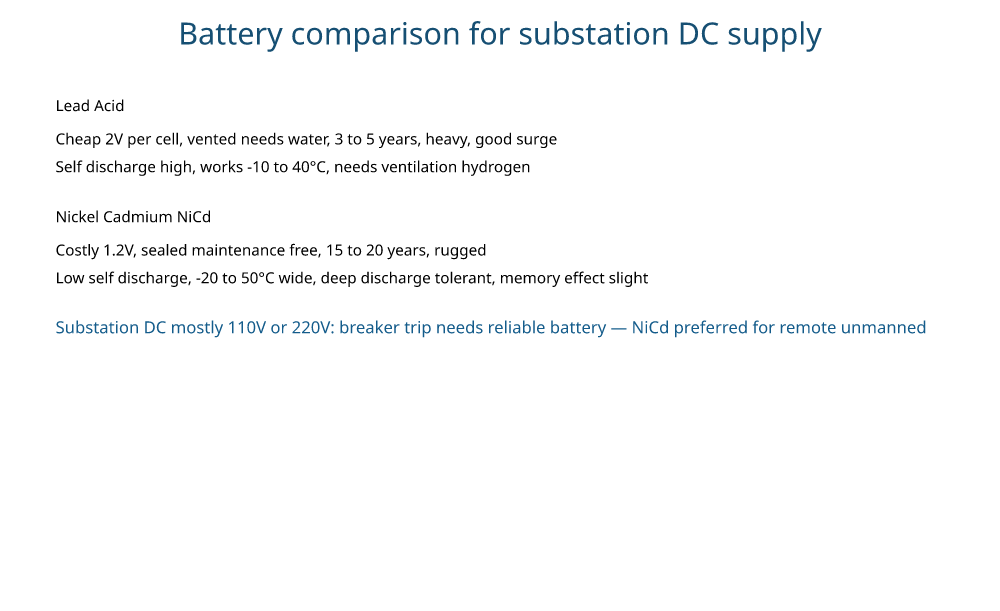
| મુદ્દો | Lead acid | NiCd |
|---|---|---|
| volt per cell | 2.0V | 1.2V |
| કિંમત | શરૂ માં સસ્તી | 2 થી 3 ગણી મોંઘી પણ 15 થી 20 વર્ષ ચાલે |
| જાળવણી | પાણી નાખવું, hydrogen બહાર | સીલ ઓછી જાળવણી |
| તાપમાન | -10 થી 40°C | -20 થી 50°C પહોળું |
| self discharge | વધુ | ઓછું |
સબસ્ટેશન 110V DC: માણસ હોય ત્યાં lead acid, દૂર અમાનવ ત્યાં NiCd વિશ્વાસુ.
Q.3 (b) Explain the function of Auto recloser in detail. (4 marks)Q.3 (b) Explain the function of Auto recloser in detail. (4 marks)4 marks૦૪ ગુણ
Auto recloser automatically re energises line after transient fault without crew. Most overhead faults 80% are transient lightning or branch touch that self clear when de energised briefly.
Sequence: fault sensed → CB trip → wait dead time 0.3 to 1 sec → reclose. If fault gone stay closed, if still there trip again → second reclose slower, if still fault lockout after 3 attempts and sectionaliser isolates.
Benefits less outage minutes, coordinated with sectionaliser and fuse, settings adjustable.
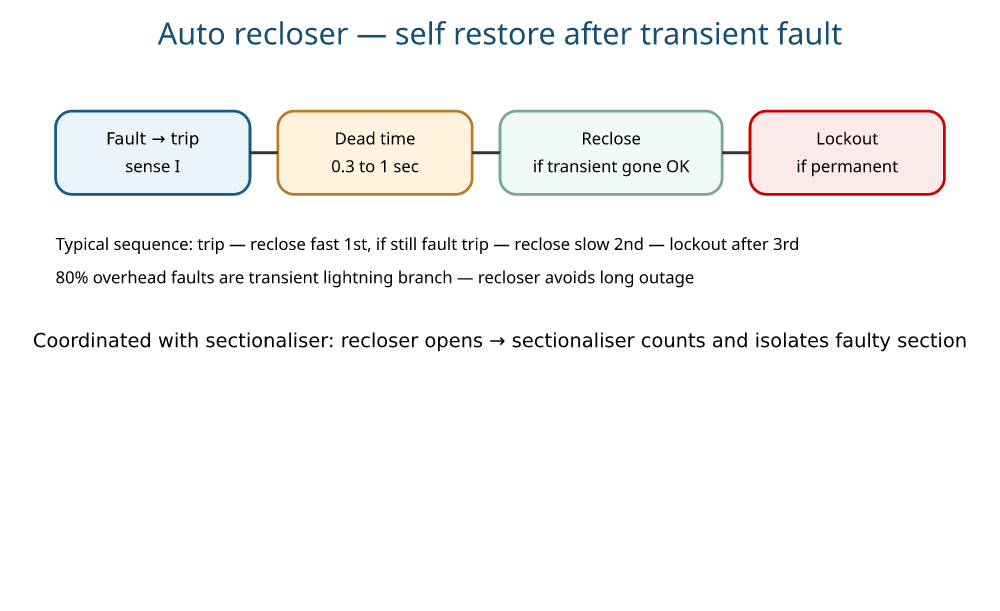
Auto recloser ક્ષણિક fault પછી જાતે લાઇન પાછી ચાલુ કરે માણસ વગર. 80% overhead fault ક્ષણિક વીજળી કે ડાળી અડવી જે થોડી વાર બંધ રહે તો જાતે મટે.
ક્રમ: fault લાગે → CB ટ્રિપ → 0.3 થી 1 sec રાહ → reclose. fault ગયો તો ચાલુ રહે, હોય તો ફરી ટ્રિપ → બીજું ધીમું reclose, હજુ હોય તો 3 વાર પછી lockout અને sectionaliser અલગ કરે.
ફાયદો outage ઓછો, sectionaliser fuse સાથે coordination.
Q.3 (c) List out types of surge arrester and explain any one in detail. (7 marks)Q.3 (c) List out types of surge arrester and explain any one in detail. (7 marks)7 marks૦૭ ગુણ
Types: Rod gap, horn gap, expulsion, silicon carbide with gaps, metal oxide gapless ZnO modern.
Metal oxide ZnO detailed gapless: Stack of ZnO varistor discs between line and earth inside porcelain or polymer housing. At normal voltage resistance in mega ohms leakage micro amps. When surge like lightning doubles voltage, resistance collapses to few ohms, conducts kilo amps surge to earth clamping voltage to protective level ~1.5 times normal, then returns to high resistance. No power follow current, no gap sparking. Energy rating 2 to 10kJ per kV, discharge current 10kA nominal.
Placed near transformer bushing, line entrance, GIS, lead length short.
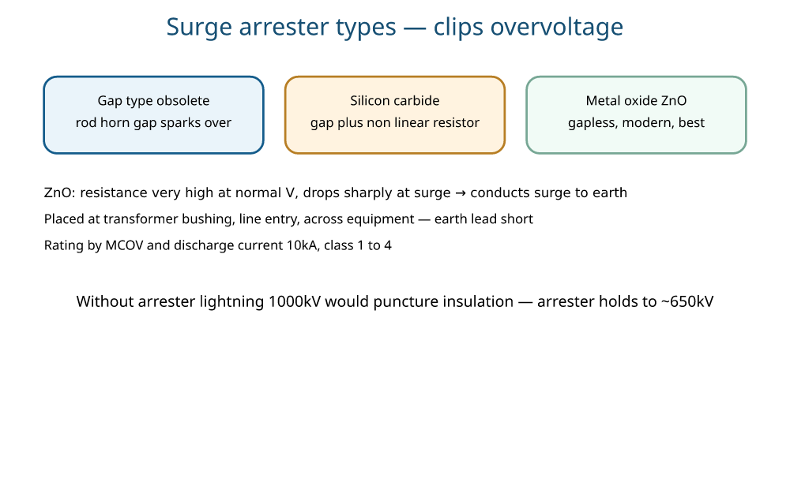
પ્રકાર: rod gap, horn gap, expulsion, silicon carbide gap સાથે, metal oxide gapless ZnO આધુનિક.
Metal oxide ZnO વિગતે gapless: ZnO varistor discs લાઇન અને earth વચ્ચે porcelain કે polymer ઘર માં. સામાન્ય વોલ્ટેજે અવરોધ મેગા ઓહ્મ micro amp leakage. વીજળી surge બમણું થાય ત્યારે અવરોધ થોડા ઓહ્મ થઈ kilo amp surge earth માં લઈ જાય, વોલ્ટેજ 1.5 ગણું પકડી રાખે, પછી પાછો ઊંચો અવરોધ. gap ચિંગારી નહિ, follow કરંટ નહિ. energy 2 થી 10kJ per kV, 10kA.
ટ્રાન્સફોર્મર bushing લાઇન પ્રવેશ GIS પાસે નાનો lead.
Q.3 (a) OR State the desired properties of a line insulator. (3 marks)Q.3 (a) OR State the desired properties of a line insulator. (3 marks)3 marks૦૩ ગુણ
- High electrical resistance to avoid leakage, high dielectric strength to withstand surge.
- Mechanically strong to carry tension with wind and ice, good compressive strength.
- Not porous, no cracks, glaze to shed water and pollution.
- Withstands temperature, UV, acid from industry, non brittle.
- High ratio of puncture to flashover, visible flashover before puncture preferred.
- વિદ્યુત અવરોધ ઊંચો leakage નહિ, dielectric તાકાત ઊંચી surge સહે.
- યાંત્રિક મજબૂત વજન પવન બરફ તાણ ઝીલે.
- છિદ્ર વગર તિરાડ વગર glaze થી પાણી પ્રદૂષણ સરે.
- ગરમી UV acid સહે, બરડ નહિ.
- puncture કરતાં flashover મોટો, flashover પહેલા દેખાય તો સારું.
Q.3 (b) OR Explain switching scheme for 220KV substation for double bus with bus coupler. (4 marks)Q.3 (b) OR Explain switching scheme for 220KV substation for double bus with bus coupler. (4 marks)4 marks૦૪ ગુણ
Two main buses A and B both 220kV. Each feeder bay has two bus isolators one to A one to B plus CB and line isolator. Normal feeder on A, B standby.
For maintenance of A without outage: close bus coupler CB to parallel A and B, then shift feeder isolator from A to B one by one, then isolate A. Reverse to return. Coupler CB rated same as feeders and interlocked.
Adv flexibility and security, disadv more isolators and protection CT switching.
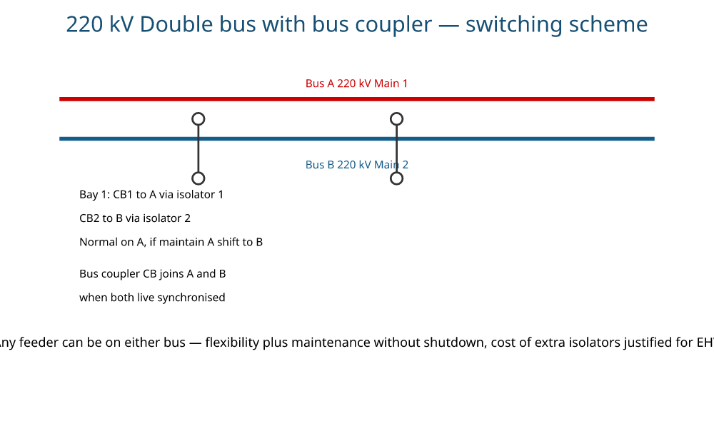
બે bus A B બંને 220kV. દરેક bay માં A અને B માટે બે isolator વત્તા CB. સામાન્ય A પર B standby.
A જાળવણી માટે outage વગર: bus coupler CB બંધ કરી A B સમાંતર, પછી ફીડર isolator એક પછી એક A થી B પર ફેરવો, પછી A અલગ કરો. પાછા એ જ રીતે. coupler CB rating સરખો, interlock.
ફાયદો લવચીકતા સુરક્ષા, ગેરલાભ વધુ isolator અને protection switch.
Q.3 (c) OR Draw and explain block diagram of power flow and voltage monitoring system. (7 marks)Q.3 (c) OR Draw and explain block diagram of power flow and voltage monitoring system. (7 marks)7 marks૦૭ ગુણ
Inputs CT VT from bays give I V to IED energy meter calculates P = V I cos φ, Q = V I sin φ, f, V. Values sent via RTU gateway over fiber or PLCC to SCADA.
System displays real time power direction arrows, voltage heat map, overload alarm if line exceeds thermal, under voltage if below 0.95 pu triggers tap changer or capacitor.
Operator sees trends, load flow estimation, predictive alerts before blackout.
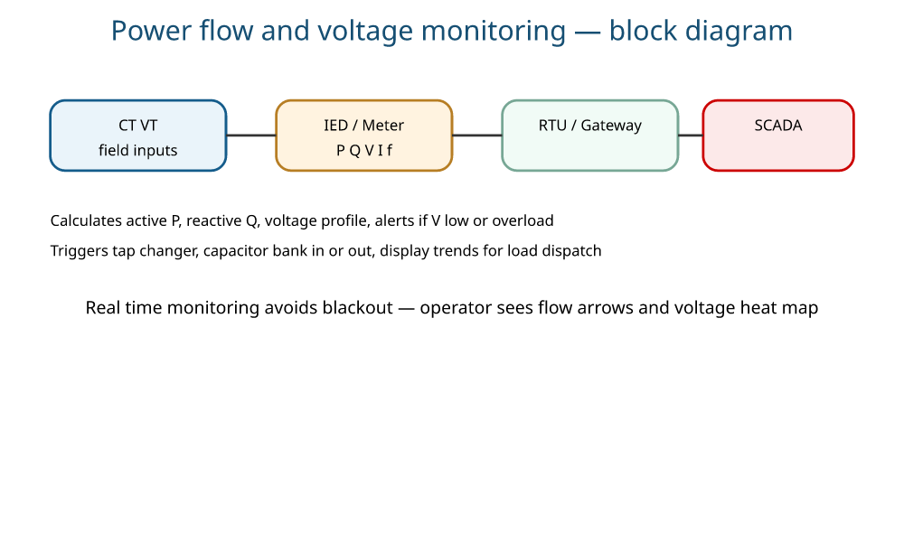
CT VT થી I V IED મીટર માં P = V I cos φ Q = V I sin φ f V ગણે. RTU gateway fiber કે PLCC થી SCADA ને મોકલે.
સિસ્ટમ power દિશા તીર, વોલ્ટેજ heat map બતાવે, line overload કે V 0.95 pu થી નીચું તો alarm tap changer કે capacitor ચાલુ.
operator trend load flow અંદાજ blackout પહેલા ચેતવણી જુએ.
Q4 · Earthing, maintenance and smart
Q.4 (a) State the objectives of earthing as per IS 3043. (3 marks)Q.4 (a) State the objectives of earthing as per IS 3043. (3 marks)3 marks૦૩ ગુણ
- Provide low impedance path for fault current to earth to operate protection quickly.
- Keep step and touch potentials within safe limits for personnel.
- Maintain zero potential reference for relays and communication.
- Protect equipment from overvoltage by providing discharge path.
- Ensure reliable lightning discharge via earth grid.
- fault કરંટ ને earth માં ઓછા અવરોધે લઈ જઈ protection ઝડપી ચલાવો.
- step અને touch potential માણસ માટે સલામત મર્યાદા માં રાખો.
- relay કોમ્યુનિકેશન માટે zero reference.
- overvoltage થી સાધન બચાવવા discharge path.
- વીજળી discharge વિશ્વાસુ earth grid થી.
Q.4 (b) Explain the need for preventive maintenance in substation. (4 marks)Q.4 (b) Explain the need for preventive maintenance in substation. (4 marks)4 marks૦૪ ગુણ
Preventive keeps failures before they happen instead of after.
- Detect hot spots, loose contacts, oil degradation early via thermography DGA.
- Extend life of transformer breaker by timely oil filtering, contact dressing, lubrication.
- Reduce unplanned outage and revenue loss, improve SAIDI SAIFI indices.
- Safety: avoid blast or fire from neglected pressure relief or bushing crack.
Schedule daily visual, monthly battery and relay check, yearly oil test, 5 yearly major overhaul per manufacturer.
Preventive ખામી પછી નહિ પહેલા રોકે.
- ગરમ જગ્યા ઢીલો contact તેલ બગાડ વહેલો પારખો thermography DGA થી.
- સમયસર તેલ ગાળણ contact સમાર સ્નેહન થી ટ્રાન્સફોર્મર બ્રેકર આયુષ્ય વધે.
- અણધાર્યું બંધ અને આવક નુકસાન ઘટે, SAIDI SAIFI સુધરે.
- સલામતી: pressure relief bushing તિરાડ અવગણો તો ધડાકો આગ ટળે.
રોજ દૃશ્ય, માસિક બેટરી relay, વાર્ષિક તેલ, 5 વર્ષે મોટું overhauling.
Q.4 (c) Explain step potential and touch potential with safety significance. (7 marks)Q.4 (c) Explain step potential and touch potential with safety significance. (7 marks)7 marks૦૭ ગુણ
When fault current enters earth grid, potential rises near injection point forming gradients.
Step potential: Voltage between two feet 1m apart while walking near fault. If mesh voltage gradient high, current flows feet to feet through body. Limit depends on body weight and duration per IEEE 80, typically 2 to 3kV for 0.5 sec with crushed rock.
Touch potential: Voltage between hand touching earthed structure and feet on ground. More dangerous because heart in path. Limit lower about 1kV for same duration. Must be below tolerable E touch from calculation.
Design uses grid with meshes 5 to 10m, plus vertical rods, high resistivity crushed rock 2000 Ωm on surface to raise foot resistance, low earth resistance below 1Ω.
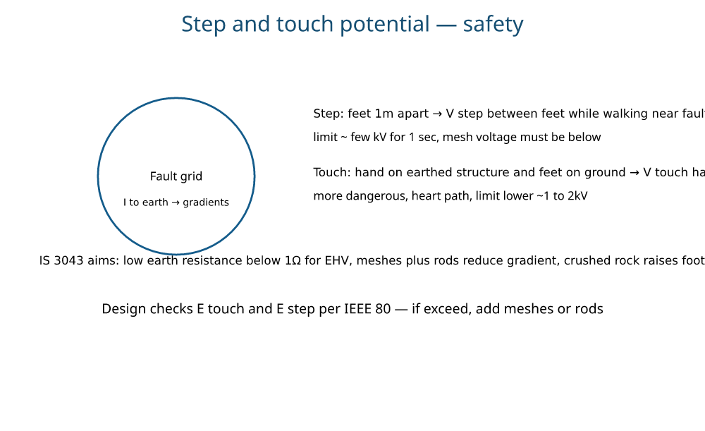
fault કરંટ earth માં જાય ત્યારે inject જગ્યા પાસે potential ઊંચું gradient બને.
Step potential: fault પાસે ચાલતા બે પગ 1m વચ્ચે વોલ્ટેજ. gradient વધારે તો પગ થી પગ પ્રવાહ શરીર માં. મર્યાદા વજન સમય પર IEEE 80 પ્રમાણે 0.5 sec માટે crushed rock સાથે 2 થી 3kV.
Touch potential: હાથ earth structure પર અને પગ જમીન પર વચ્ચે વોલ્ટેજ. વધારે જોખમી હૃદય વચ્ચે. મર્યાદા ઓછી ~1kV. ગણતરી E touch થી નીચે રાખવી.
ડિઝાઇન માં 5 થી 10m mesh વાળો grid વત્તા rod, સપાટી પર crushed rock 2000 Ωm પગ અવરોધ વધારવા, earth resistance 1Ω થી નીચો.
Q.4 (a) OR Explain the purpose of Hybrid Gas Insulation Substation (HGIS). (3 marks)Q.4 (a) OR Explain the purpose of Hybrid Gas Insulation Substation (HGIS). (3 marks)3 marks૦૩ ગુણ
HGIS mixes AIS and GIS: Bus stays air insulated cheap, but breaker isolator earth switch are in compact SF6 modules. Purpose is to get GIS reliability in polluted or space limited retrofit without paying for full GIS enclosure of whole bus.
Reduces size ~40%, maintenance free live parts, suitable for extending old AIS or indoor limited height.
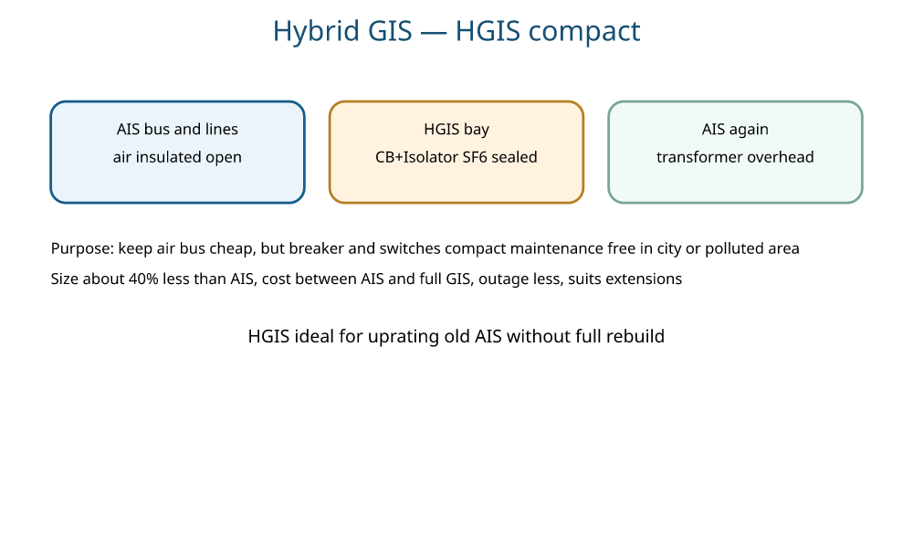
HGIS AIS અને GIS નું મિશ્રણ: bus હવામાં સસ્તી રહે, પણ બ્રેકર isolator SF6 મોડ્યુલ માં compact. હેતુ પ્રદૂષિત કે જગ્યા ઓછી જૂની AIS ને full GIS ખર્ચ વગર GIS વિશ્વાસ આપવો.
કદ ~40% ઓછું, live ભાગ જાળવણી મુક્ત, જૂની AIS વધારવા કે ઓછી ઊંચાઈ માં અનુકૂળ.
Q.4 (b) OR Explain the features of green substation. (4 marks)Q.4 (b) OR Explain the features of green substation. (4 marks)4 marks૦૪ ગુણ
- Uses eco gas g3 or dry air instead of SF6 where possible, natural ester oil transformers biodegradable.
- Low energy: LED lighting, solar rooftop, efficient cooling, rain water harvesting.
- Low noise and EMF design with setbacks vegetation screening.
- Waste management recycling, bird diverters, oil containment pits no leak to soil.
- Digital monitoring reduces site visits fuel, may get LEED certification and public acceptance.
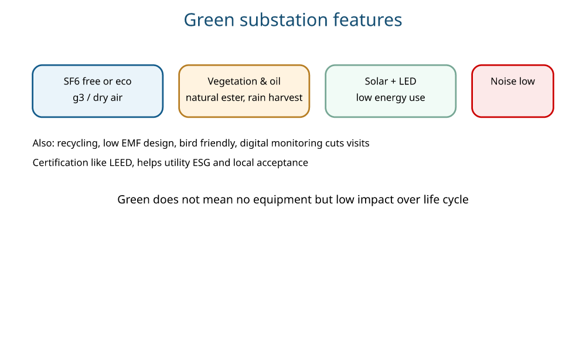
- SF6 બદલે eco gas g3 કે dry air, natural ester તેલ biodegradable.
- ઓછી ઉર્જા: LED solar છત કાર્યક્ષમ કુલિંગ rain water.
- ઓછો અવાજ EMF setback વૃક્ષ પડદો.
- કચરો રિસાયકલ પક્ષી બચાવ oil pit જમીન માં ન જાય.
- digital દેખરેખ થી મુલાકાત ઓછી LEED સર્ટિફિકેશન લોક સ્વીકાર.
Q.4 (c) OR Draw and explain block diagram of smart grid based substation communication. (7 marks)Q.4 (c) OR Draw and explain block diagram of smart grid based substation communication. (7 marks)7 marks૦૭ ગુણ
Smart grid adds intelligence to traditional SCADA: Field CT VT → merging units digitise at 4kHz → process bus fiber to bay IEDs for protection using GOOSE trip in 4ms → station bus MMS to gateway → WAN to control centre plus DER and demand response servers.
Time sync via PTP, cybersecurity firewall, supports self healing — fault auto locates and isolates healthy sections remotely, integrates solar wind and storage, demand price signals.
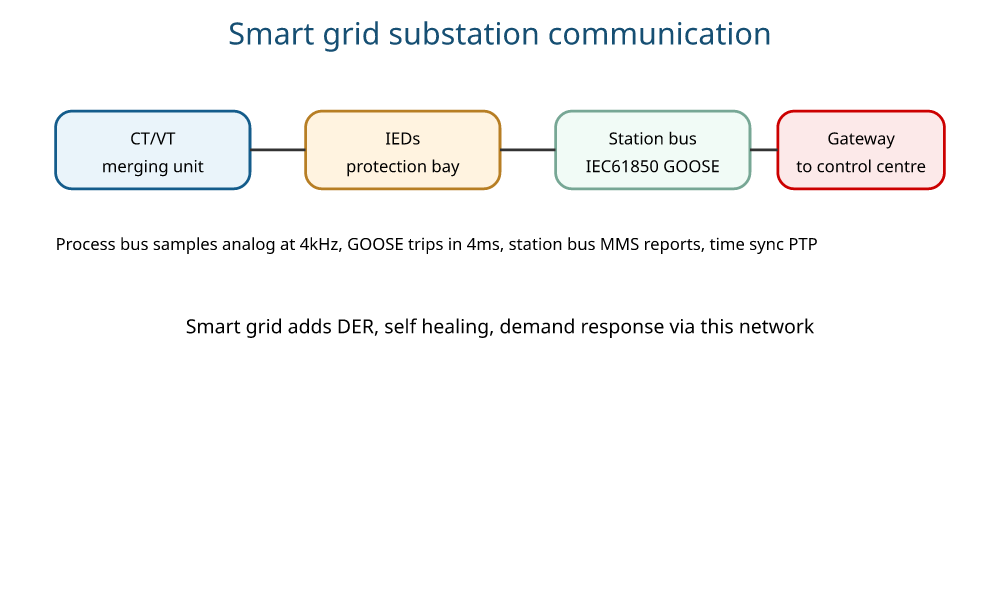
Smart grid પરંપરાગત SCADA માં બુદ્ધિ ઉમેરે: CT VT → merging unit 4kHz digitise → process bus fiber bay IED GOOSE 4ms trip → station bus MMS gateway → WAN control centre વત્તા DER demand server.
PTP time sync firewall, self healing — fault જાતે શોધી તંદુરસ્ત ભાગ દૂર થી ચાલુ, solar wind storage જોડે, માંગ કિંમત સંકેત.
Q5 · Digital, SCADA and HVDC
Q.5 (a) State advantage and disadvantage of digital substation. (3 marks)Q.5 (a) State advantage and disadvantage of digital substation. (3 marks)3 marks૦૩ ગુણ
Advantages: Massive copper reduction one fiber replaces 100s cores, less EMI, accurate non conventional sensors, flexible logic without rewiring, self diagnostics fast commissioning.
Disadvantages: High initial cost, needs optical CT VT and merging units, cyber vulnerability, staff needs new skills, interoperability testing per IEC61850 needed.
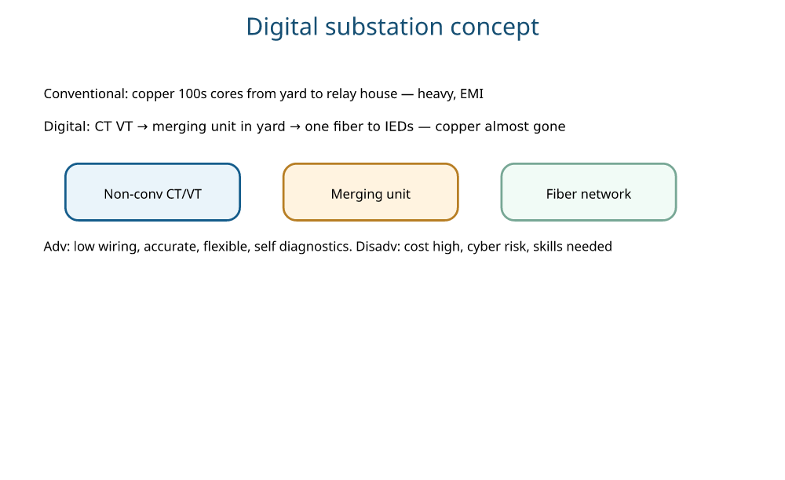
ફાયદા: તાંબું ઘણું ઓછું એક fiber 100 core બદલે, EMI ઓછો, non conventional સેન્સર સચોટ, rewiring વગર લવચીક logic, self તપાસ ઝડપી.
ગેરલાભ: શરૂ ખર્ચ વધુ, optical CT VT merging unit જોઈએ, cyber જોખમ, નવી આવડત જોઈએ, IEC61850 પરીક્ષણ.
Q.5 (b) Explain three position disconnector/earthing switch used in GIS. (4 marks)Q.5 (b) Explain three position disconnector/earthing switch used in GIS. (4 marks)4 marks૦૪ ગુણ
One blade has three stable positions in one GIS enclosure: CLOSED connects to bus, OPEN isolated floating, EARTHED connects conductor to enclosure earth for safety.
Motor drive moves blade sequentially, mechanical interlock forbids direct CLOSED to EARTHED without passing OPEN, position feedback to control. Saves space and cost versus separate isolator and earth switch, one drive.
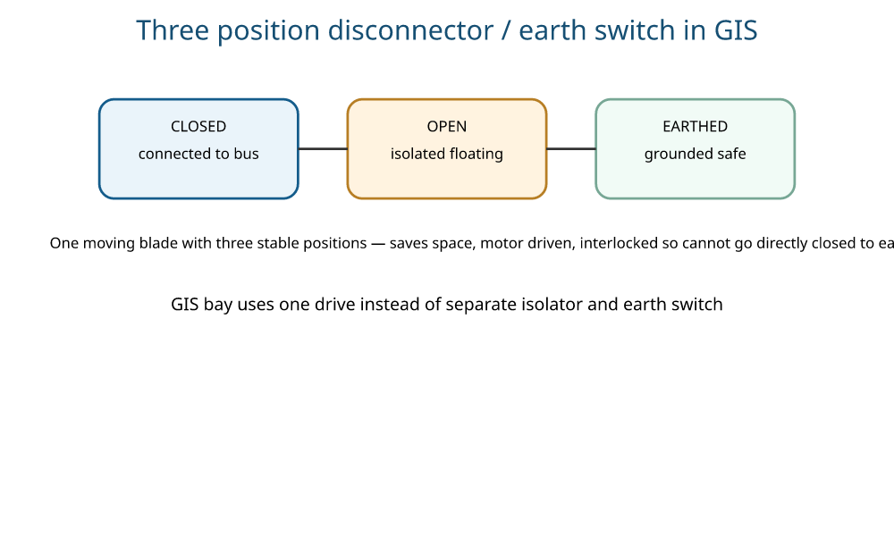
એક blade એક GIS ઘર માં ત્રણ સ્થિર સ્થાન: CLOSED bus સાથે, OPEN તરતું અલગ, EARTHED earth સાથે સલામતી.
મોટર ક્રમે ફેરવે interlock સીધું CLOSED થી EARTHED ન જાય OPEN થઈ ને જાય, position feedback. અલગ isolator earth switch કરતા જગ્યા ખર્ચ બચે એક drive.
Q.5 (c) Draw and explain digital monitoring of converter performance. (7 marks)Q.5 (c) Draw and explain digital monitoring of converter performance. (7 marks)7 marks૦૭ ગુણ
Sensors on valves measure thyristor voltage, current, temperature via fiber optic isolated. Data to local IED computes firing alpha, commutation margin gamma, harmonics, losses.
Compare to digital twin expected values, flag abnormal: rising temperature means cooling fault, miss commutation means AC voltage dip. Alerts to HMI, trends predictive maintenance, avoids catastrophic valve failure.
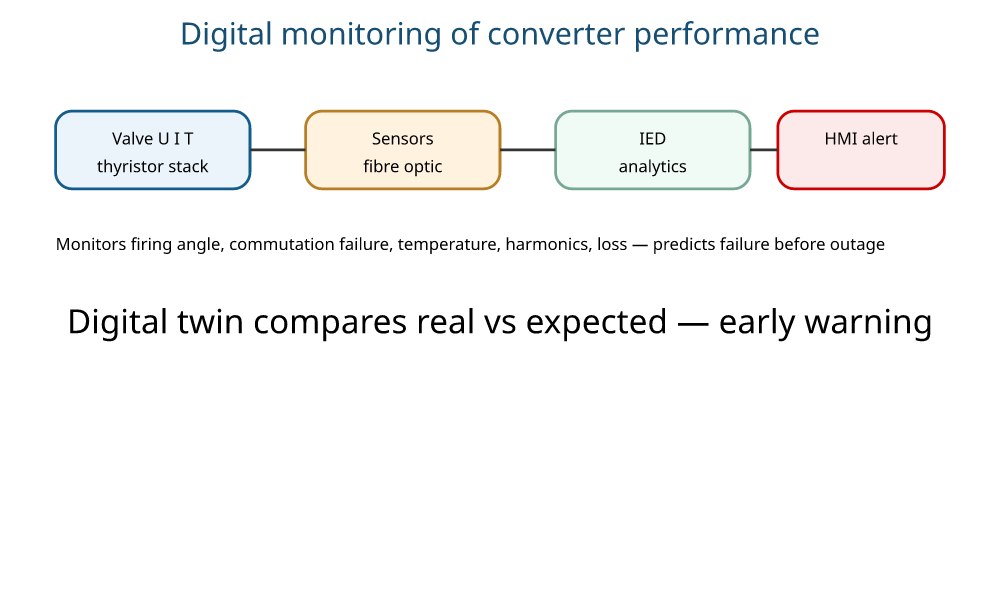
valve પર સેન્સર thyristor વોલ્ટેજ કરંટ તાપમાન fiber થી માપે. IED alpha gamma harmonic loss ગણે.
digital twin સામે સરખાવે: તાપમાન વધે તો cooling ખામી, commutation miss તો AC dip. HMI ચેતવણી predictive જાળવણી valve નિષ્ફળતા ટાળે.
Q.5 (a) OR State the advantages of SCADA substation. (3 marks)Q.5 (a) OR State the advantages of SCADA substation. (3 marks)3 marks૦૩ ગુણ
- Remote monitoring of all V I P Q breaker states from control centre, fewer site visits.
- Faster fault location and restoration via remote control.
- Data logging for post fault analysis and load forecasting.
- Unmanned operation possible with alarms, reduces manpower cost.
- Coordination across grid for optimal dispatch.
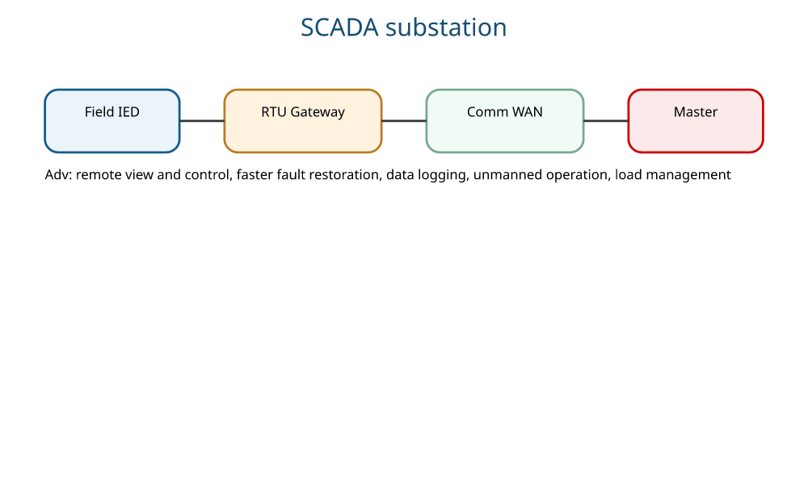
- બધા V I P Q breaker સ્થિતિ દૂર થી દેખરેખ મુલાકાત ઓછી.
- fault ઝડપી શોધ પુનઃસ્થાપન remote control થી.
- post fault વિશ્લેષણ load forecast માટે logging.
- alarm સાથે માણસ વગર ચલાવી શકાય ખર્ચ ઓછો.
- ગ્રીડ ભર coordination ઇષ્ટતમ dispatch.
Q.5 (b) OR Explain modern technologies used in digital substations. (4 marks)Q.5 (b) OR Explain modern technologies used in digital substations. (4 marks)4 marks૦૩ ગુણ
- Non conventional instrument transformers: Optical current and voltage, accurate wide range, light.
- Merging units: Sample analog at 80 per cycle digitise to IEC61850-9-2.
- Process bus fiber: Replaces copper, GOOSE peer peer trip.
- Time sync PTP: Microsecond accuracy for synchrophasor.
- Cybersecurity: Firewall intrusion detection, role based access.
- Optical CT VT: પ્રકાશીય સચોટ હળવું.
- Merging unit: 80 sample per cycle digitise IEC61850-9-2.
- Process bus fiber: તાંબું બદલે GOOSE trip.
- PTP time sync: microsecond synchrophasor.
- Cyber સુરક્ષા: firewall intrusion.
Q.5 (c) OR Draw and explain 12 pulse HVDC converter station in detail. (7 marks)Q.5 (c) OR Draw and explain 12 pulse HVDC converter station in detail. (7 marks)7 marks૦૭ ગુણ
Two 6 pulse bridges series gives 12 pulse: AC 400kV feed via two transformers: one Y-Y and one Y-Δgiving 30° phase shift. Each feeds one 6 pulse thyristor bridge. DC sides series add to ±500kV high power.
Harmonics improve: 5th 7th cancel leaving 11th 13th smaller so filters smaller. Includes converter transformer with tap, thyristor valve hall, smoothing reactor, AC/DC filters, DC breaker, control sets firing angles alpha for rectifier 15° inverter gamma 15° for power control and reversal.
Used for long distance bulk transmission and asynchronous intertie.
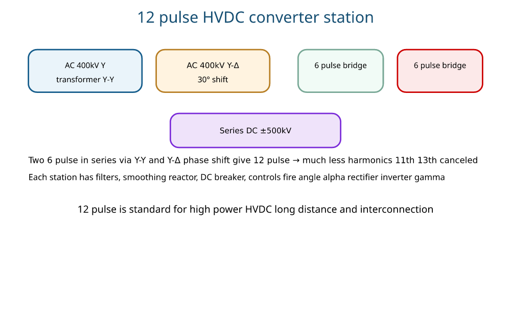
બે 6 pulse શ્રેણી →12 pulse: AC 400kV બે ટ્રાન્સફોર્મર Y-Y અને Y-Δ 30° shift વાળા દરેક એક 6 pulse thyristor bridge ને. DC શ્રેણી ±500kV વધુ power.
Harmonic સુધરે: 5th 7th cancel 11th 13th નાના filter નાના. ભાગ: tap વાળો ટ્રાન્સફોર્મર valve hall reactor filter DC breaker control alpha 15° gamma 15° થી power.
લાંબા અંતર મોટા transmission અને અલગ frequency જોડાણ માટે.